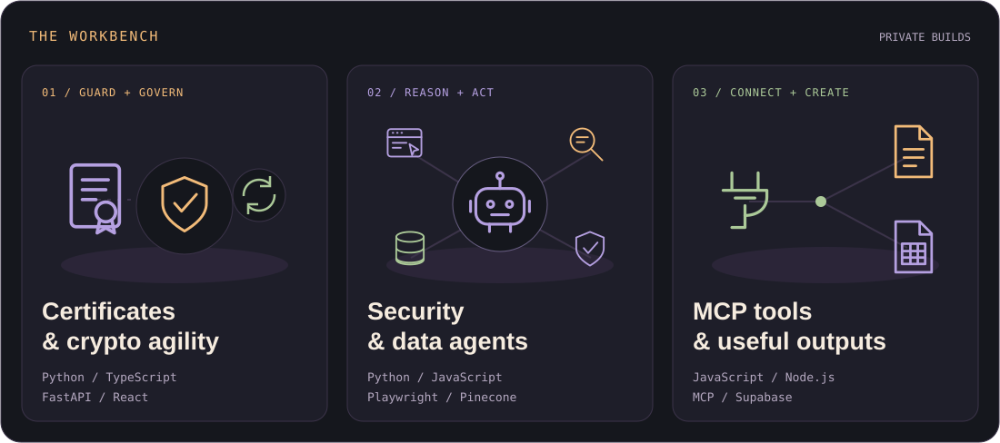
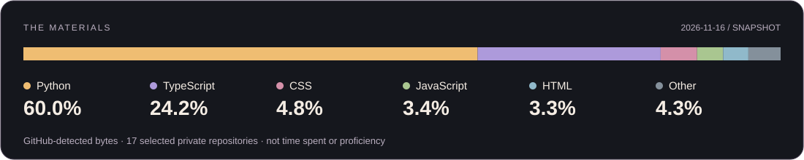
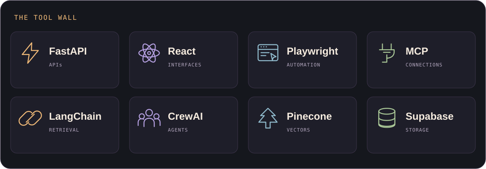
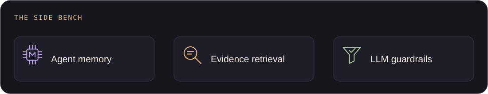

Text version & data notes
I build agentic AI systems, data-protection workflows, and the tools that connect them. My work spans Python backends, TypeScript interfaces, retrieval pipelines, and browser automation.
Certificate management and crypto agility — Bringing certificate management, cryptographic assessment, and AI-assisted operations into one platform, with a Python API and a React interface.
Agents for security and data protection — LLM-guided browser exploration, retrieval-backed security assistants, and role-aware data protection workflows. I work on the path from finding evidence to taking a useful next step.
MCP tools with tangible outputs — Tools that turn an agent's work into Word reports and Excel workbooks, with file delivery through cloud storage. Small interfaces that make automation useful beyond the chat window.
| Language | Byte share |
|---|---|
| Python | 60.0% |
| TypeScript | 24.2% |
| CSS | 4.8% |
| JavaScript | 3.4% |
| HTML | 3.3% |
| Other | 4.3% |
2026-11-16 · 17 selected private repositories. GitHub-detected bytes, not proficiency or time spent. Related code can be counted more than once.